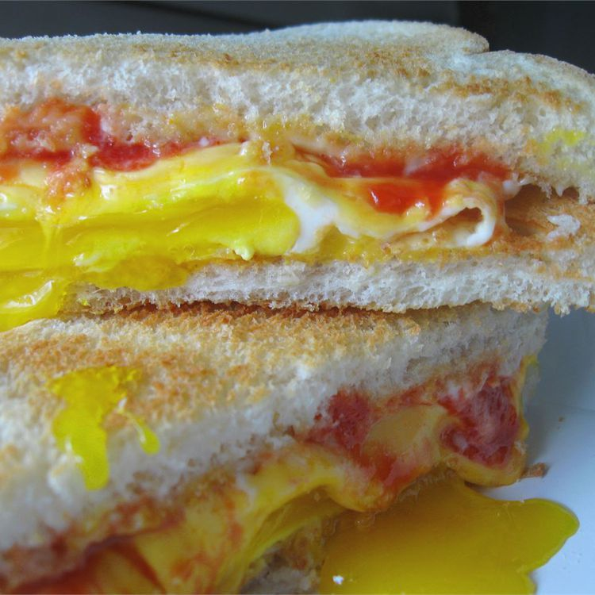

Egg Sandwich
Home

Description
This fried egg sandwich makes great comfort food! You can use any type of
bread or cheese that you want for this quick and easy breakfast. Serve
with fruit and juice and/or milk for a full breakfast.
Ingredients
- 2 teaspoons butter
- 4 large eggs
- 4 slices processed American cheese
- 8 slices toasted white bread
- salt and pepper to taste
- 2 tablespoons mayonnaise
- 2 tablespoons ketchup